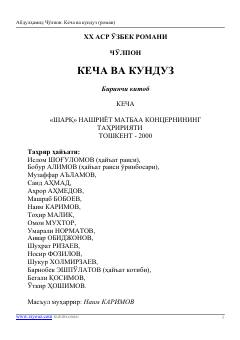

KVCho'lponning o'zbek adabiyoti durdonasi — Zebi hayoti haqida roman.
Abdulhamid Cho'lponning 'Kecha va kunduz' romani o'zbek klassik adabiyotining durdonalaridan biri bo'lib, asarda Zebi va Saltanat ismli ikki qizning hayoti, muhabbati va ijtimoiy muammolari tasvirlanadi. Roman bahor fasli tasviridan boshlanib, o'sha davr o'zbek jamiyatidagi an'analar, nikoh va ayollar taqdiri mavzularini qamrab oladi. Asar 2000-yilda 'Sharq' nashriyotida qayta nashr etilgan.